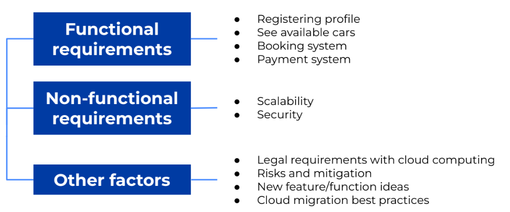
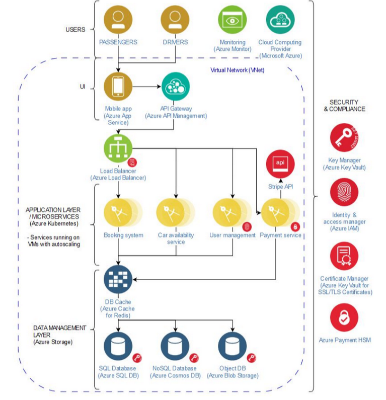

DESIGNING A DATA ARCHITECTURE FOR A RIDESHARING COMPANY: CLOUD MIGRATION
As a data sceintist, understanding the software and data architecture that you are working within is increasingly important, especially for roles that require buildling machine learning and data pipelines in production.
Goals:
In this case study, I sought to develop a data software architecture for a fictional ridesharing company, Carpooling A/S. In this case, Carpooling A/S has an existing on-premise software architecture, but wishes to migrate to a cloud based solution, the likes of Microsoft Azure, AWS and Google Cloud. I needed to fulfil the following functional and non-functional requirements with the new system:
Summary/Highlights
For this case study, I researched the topic extensively over a period of 72 hours. Here is a summary of my solution:

Here you can find the full report/presentation here: Presentation
Below is a detailed visual representation of the design, including all the features and functionality required by Carpooling A/S:
